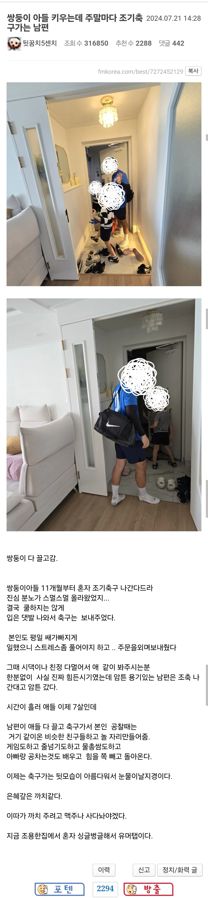
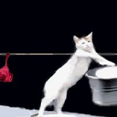

7년 장투에 성공한 쌍둥이 키우는 펨코녀.jpg
댓글
치악산 복숭아 당도 최고
쓰리고인데 포고 가시겠어요?
쌍둥이 아들 11개월부터 조기축구는 좀 빡센데;;
일찍 배워서 조기 축구인거

애들 체력만 좋아져서 평일에 죽어나갈듯
어차피 두명이라 지들끼리 잘놀듯


존나 웃기네 ㅋㅋㅋㅋㅋㅋㅋㅋㅋ
까치 맥주 사놓는다는거에서 이미 된사람임
평일에 직장에서 힘들게 일하는걸 알아주는 사람임
11개월 쌍둥이인데 조기축구는 개힘들텐데 너무하긴하네 ㅋㅋㅋ
진짜 나도 개빡칠거같긴 한데 저 글쓴이는 또 좋은 마음으로 참아가며 보내줬고 다 크니까 되갚음당한듯. 아름다운 부부다
알아서들 잘 사는거지 ㅇㅇ
캬 이기회에 1명더?
최고의 아내
최고의 남편
최고의 아빠